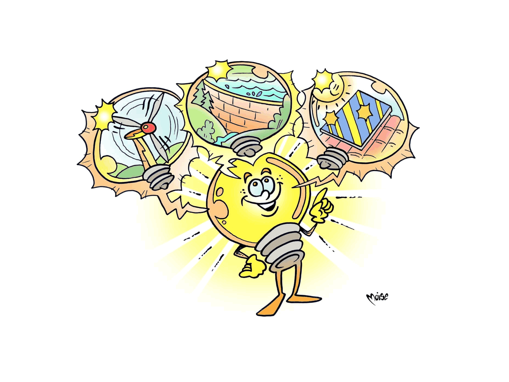

Where does It
Come from?

The word energy comes from the Greek word "ἐνέργεια" (enérgheia) and it means
living force. Energy is like a chameleon: there are various forms
(for example, chemical, thermal and electric energy) and each tends
to change from one form to another. We find it in the sun, in fossil fuels,
and in the movement of water.
Do you know what energy form we should use from a sustainable
development point of view?
To find out, try to solve the puzzle
below: start from the letter R in the red box at the top
and virtually (i.e. without using a pencil, draw a single
imaginary line) touching all the boxes once only
(you can move horizontally, vertically and diagonally,
and the line can cross itself at times) to end up at the letter
Y at the bottom in the blue box: in this way, you will discover
the solution!